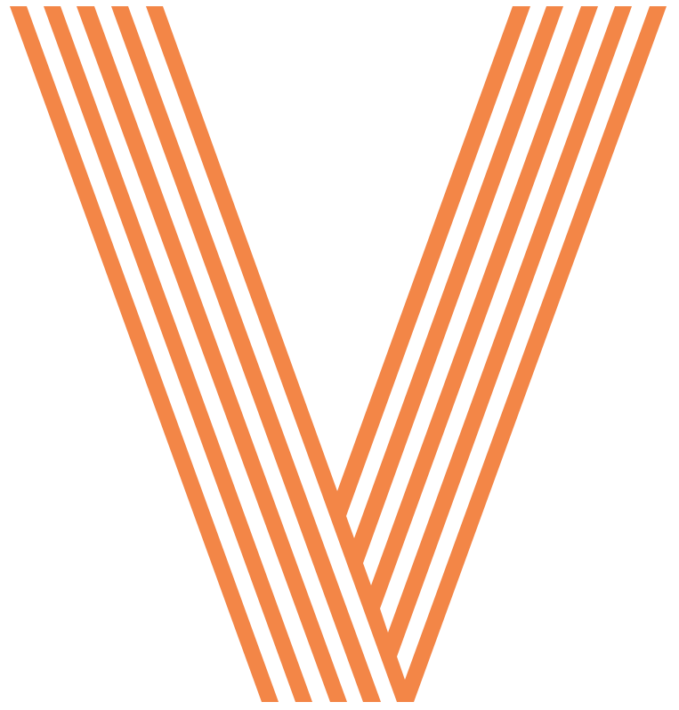

An unofficial redesign of University of Leicester's website with the goal of better meeting the average user's information needs.
Go in-depthHaving determined that there isn't quite enough pug love in the world yet, my teammates and I tackled the challenge of organizing and building a pug information and adoption site.
Go in-depthA portfolio design featuring vibrant splashes of red, yellow, and blue.
Go in-depthA few designs for the UCSD organization Women in Computing.
Go in-depth
Android Application for wine-lovers to discover, track, and rate wines, with features like Wine of the Day and Random Facts.
Go in-depthUniversity websites tend to hold information almost to excess. They are also host to a varied yet predictable audience: prospective students, parents, faculty, journalists, and so on. How could we satiate each of these user groups while ensuring the average user gets what they need quickly and in full?
The most important part of organizing such a large quantity of information is the navigation. Our chosen navigation bar looks and behaves roughly the same between pages, so users can have a standby should they get lost while navigating.

We featured six top-level links that mostly correspond with the original site's priorities. When the user hovers over them, they expand to reveal full-size images.
Prospective students are a large, if not the largest user group for a university website. It's important to have some kind of Admissions portal as well as a more broad Academics portal that also serves current students.
When we decided to create a "pug hub" for the web, we looked to other dog adoption sites for inspiration. We wanted a cross between larger, more general sites like adoptapet.com and the more intimate, down-to-earth nature of individual adoption agencies.
Pugs are such a silly, lovable breed - we wanted that to reflect in the color scheme and design.
At the same time, pugs are also notorious for their health problems. It was vital we provide all necessary information to potential new owners.
Each pug has an expandable view that opens to view more information about that specific pug.

As a rising sophomore, I was excited to learn that Women in Computing at UCSD was redesigning their website. I contacted WIC's webmaster, and she was kind enough to let me pitch some ideas. In the years since working on this project, WIC has made a huge impact on the UCSD campus and has done a fantastic job furthering their mission.
The featured design is definitely the most feminine one I did. The light color scheme, the script writing, and the ample amount of white space invokes a general "scrapbooking" vibe. Later iterations of the design held onto the feminine component, but better served the purpose of the organization.
We're fortunate here in California to have a lively wine industry. This is a wine-cataloguing app perfect for those who want to keep track of what wines they've tried and would like to buy.
I played a big role designing the user interface and developing the wine search and information pages. This project was a team effort completed in the months of April - June 2013. It was developed in Java using the Android SDK and SQLite DBMS.
A location-based Android application for sharing and exploring photos.
Website redesign for a Bay Area non-profit reading and writing program, Read Write Discover.